Map Author: CTMC
Origin: Map Link
Versions: MC = 1.19.2
Presentation
Mapwreck 5 - Currents is a full length CTM map. It was made under a week with a high amount of participants.
This map was played in multiplayer.
Overview
Frosted Factory - White
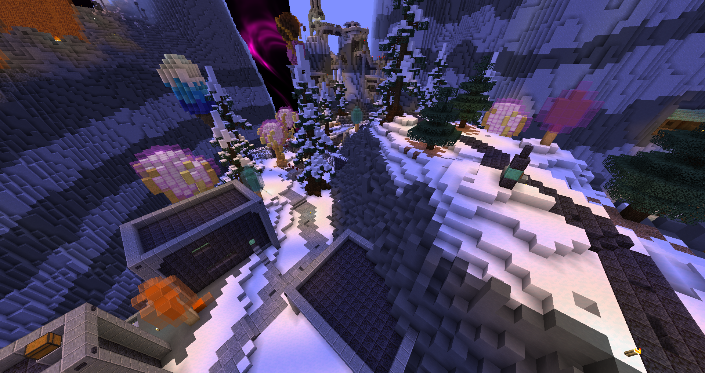
It was a fun little area, not much to say, fairly unusual theme for a first but I didn’t dislike it. The trident was way too broken so early though, going to diamond power level from wooden.
Painter’s Paradise - Orange
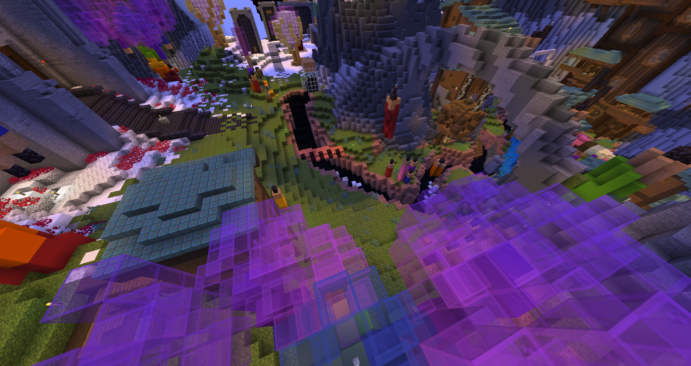
The mobs were wacky, I liked how it made you discern which enemies where good for you or not. The tower of doom was cool, although this map as an abusive amount of jump boots in many places, all those poor lava eggs…
Blightmuck Bog - Magenta
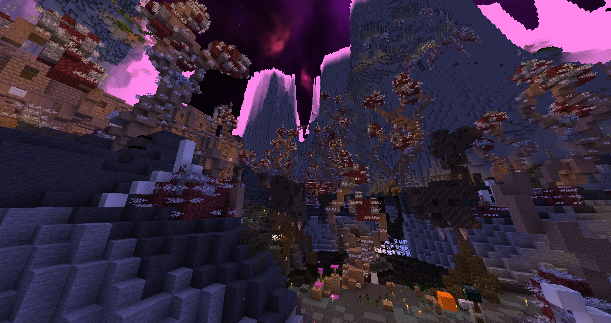
Looks really sick(in all meanings), although I didn’t really experience it due to getting lost. Seems to have fun uses of hazards.
Remote Highlands - Lime
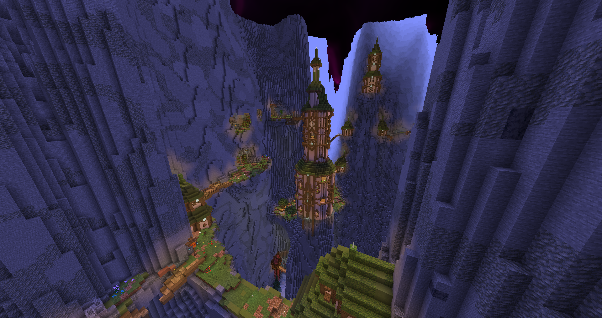
Pretty good area, the loot is wacky in balance with some great weapons and other subpar gear. I found the goofy crossbow glitch, very handy for fast travel. I liked the vista of being on the cliffside while progressing. I got lost while entering magenta then going up a lava shaft and ended up doing this area alone.
Crystallized Shrine - Monument
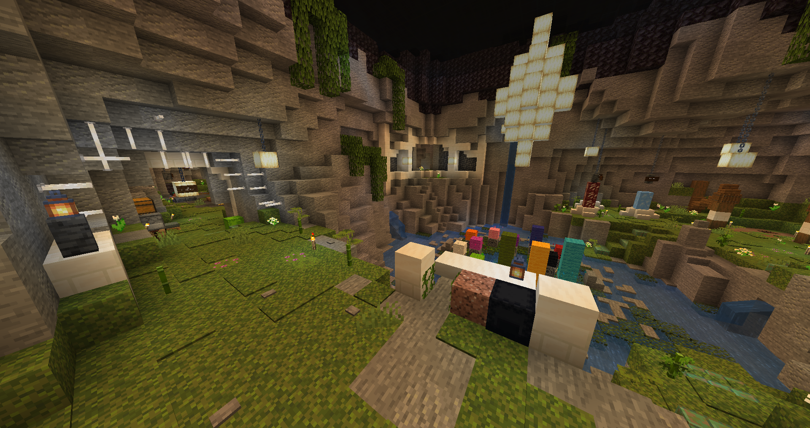
Not a fan of this one, it’s confusing with the pedestals that accept any objective, and the utilities are too spread out and unpractical. The teleporter room is cool but also troublesome to use, always needing to double check which goes to where.
Hog Roast Hills - Light Blue

It was alright, kinda meh to be honest, but as we’ll see soon enough, meh is good, I like meh. The spruce spider fang was a big carry, hunter 3 so early is pretty broken.
Artic Research Facility - Bonus 1
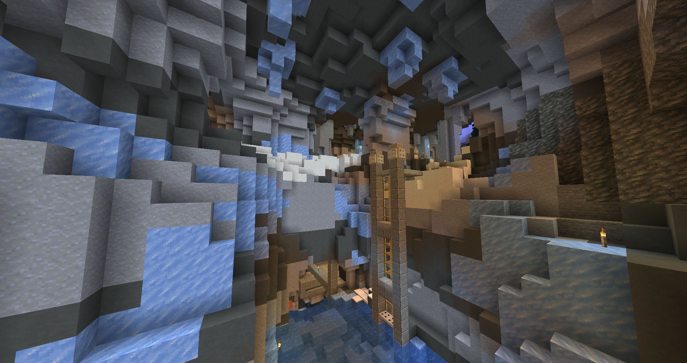
It had a interesting use of level design to make it fun to navigate. Although maybe my complaint would be that it didn’t have enough hidden vents and passages, it seemed ripe for it.
Frostfire Throne - Yellow
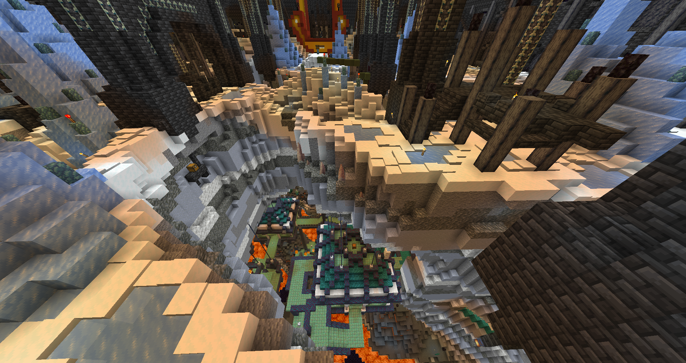
It begins. It was way too chaotic and overwhelming, not very fun, the phantom spam with the nova was epileptic. The bottom part didn’t make it that much better.
Magmatic Depths - Bonus 2
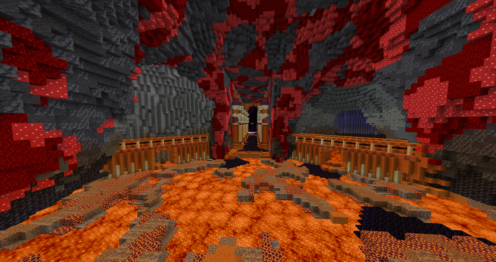
It was kinda fun, although we just went in with water bucket surfing above the lava. Grr, the blasting boots break all sense of level design areas made, the return of the moonlight hookshot.
Thermic Rift - Pink
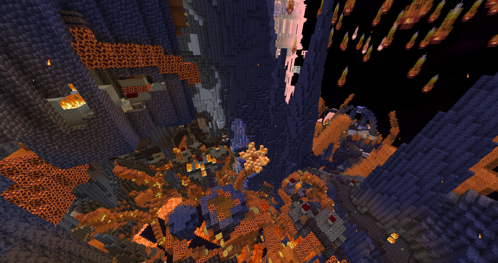
It looks really cool, but the level and mob design was a nightmare - it made me regret yellow’s chaos. The big pit of doom, deadly mobs and corpse runs made it a purgatory, ending it was a relief. Black Devil’s Blade is amazing, thanks Cooley.
Field of the Fallen - Purple
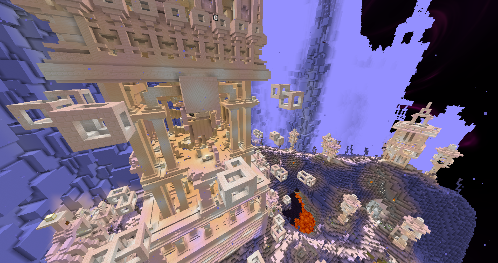
If you thought the previous areas were too much, this one amps the mobs to eleven, especially the bow skeletons which deal an absurd amount of damage. It’s painful to say that, but the aesthetics are nice(I always love some pure white buildings) and the rest is lacking; the loot was disappointing with too many chests containing barely a handful of food or arrows, although I did use the evasion 2 iron sword until the end of the map. While we didn’t die as much thanks to the simple layout, it was still not a very pleasant experience.
Ruins Shangri-la - Blue

Quite great, it reminds me of render-style final castle level design. The mobs were a bit on the funni side, but they were quite good in difficulty that doesn’t rely on big numbers. The loot had the right power level of just stronger enough from purple/lime without being too no-brainer upgrading, aside some useless pieces and the super strong offhand locked behind the riddle. What lacked mostly was to have some shortcuts to make navigation easier.
Nereids Abyss - Green

This is when I began having a headache while playing; I didn’t like the messy palette, layout was very confusing, and the mobs were weird and made a lot of noise constantly. It wasn’t particularly hard though, and the loot was mostly ignored.
Ruinlight Remembrance - Red
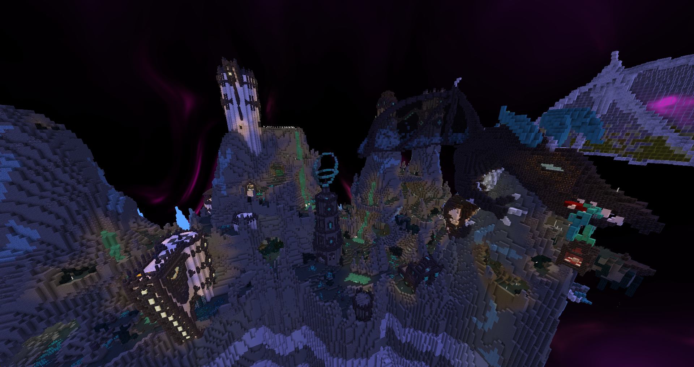
I will surprise no one if say that it was too much. It was a sensory overload of custom stuff, with mobs, shaders, items. The unique loot wasn’t too appealing for the situation(I did use the peruvian boots though, they fit my build well) and it felt frustrating to deal with the locked chests(although I’ve heard they were set way too high). The area quality is apparent, I just wasn’t able to enjoy it fully.
Cliffside Monastery - Bonus 3
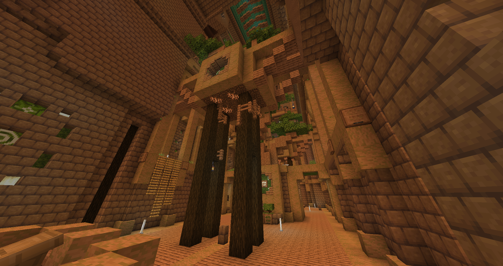
What I needed was some simplicity, and that’s what I got here. It was fun and short, a good change of pace from the chaos.
The Mephistophelian - Black
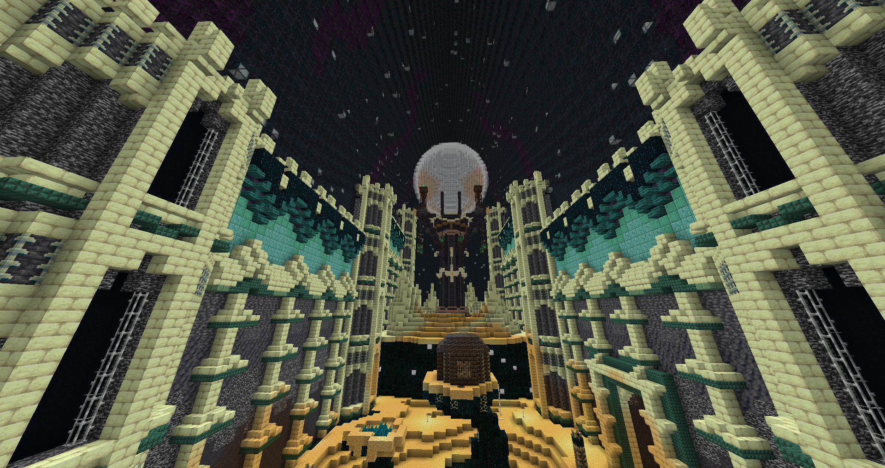
What better end to this chaotic power trip than this? I appreciated that it wasn’t overly difficult, and overall it was a nice area, I just couldn’t see well; the palette made things very dark. At that point my headache grew worse, but at least it was the end.
Conclusion
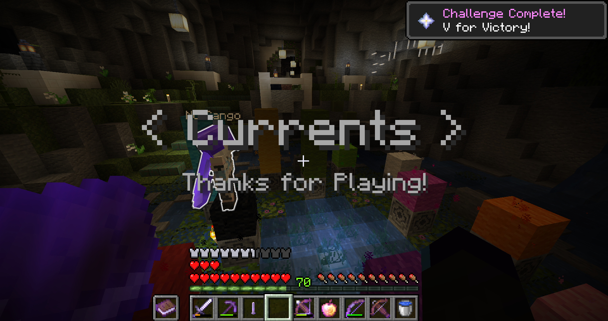
The aesthetics were very solid all around, but the gameplay fluctuated greatly, so I want to give a big up for the participants and the compilers who worked very hard so the map sees release.
I liked the way it was all connected, giving a more cohesive world feel. Sometimes the teleporters were hard to notice, or in inconvenient places. Due to the linear progression and spread area locations, it was a bit annoying to follow the set order by running around.
I didn’t understand why the bonus areas weren’t simply normal areas, and the bonus objectives needed a name change so it doesn’t feel like you need to make them. The bonus netherite was better although that’s just emeralds without hints - I’m glad it’s not boring crafting.
Even though we had graves, it was still inconvenient, had me remember why I made Death Toll. Corpse runs add unnecessary padding before you get to play again, and often leading to inventory nightmare/gold experience requiem.
I only realized it at the end, but past Blue, I barely looked at loot even though I’m sure there were strictly better gear to find. It was a bit too weird, and we were already so comically overpowered. I’m impressed that the map managed to reach this level of power trip without even reaching diamond tier, I had worse armor than iron.
We need better mob testing, and some custom overload budget so it doesn’t feel like entering into a casino. The final chunk of the map was giving me a severe headache with the dark visuals and aggressive stimulations.
I think that despite the problems, Mapwreck 5 is still an improvement over 4, anticipating the reception of 6!